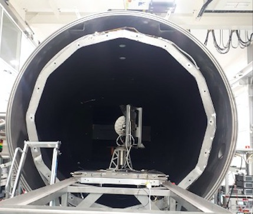

Terahertz Testing Facility for the JUpiter ICy moons Explorer (JUICE) ESA Mission

The Low Temperature Near Field Terahertz Chamber (LORENTZ), is the newest antenna test facility developed for European Space Agency (ESA) by Dutch Terahertz Inspection Services B.V. and its multiple suppliers, mainly from the Netherlands, but also from other EU countries. LORENTZ is the third lagest facility at ESTEC, in Noordwijk, The Netherlands. Such Low-temperature Near-field Terahertz Chamber allows direct measurement of antenna systems in extreme vacuum and thermal conditions, including the chill of deep space. It has a diameter of 2.8 m and a mass of 12 tons. It allows to test the instrument with max volume of 1900 mm x 1900 mm and a mass up to 500 kg in a frequency range from 50 GHz till 1500 GHz and under the temperature from 80K till 390 K.
The first user of the developed Terahertz Testing Facility was the Submillimetre Wave Instrument (SWI), part of the science payload of the JUpiter ICy moons Explorer (JUICE) spacecraft, which was successfully launched on April 14, 2023. SWI has a steerable 30 cm aperture antenna which will scan Jupiter's stratosphere and troposphere, and the exospheres and surfaces of the icy moons Ganymede, Callisto and Europa. In Jupiter's orbit, SWI optics will be at 50–80 K ambient temperature.
You can find more information about LORENTZ Facility and ESA JUICE mission below:This publication is intended for educational use.